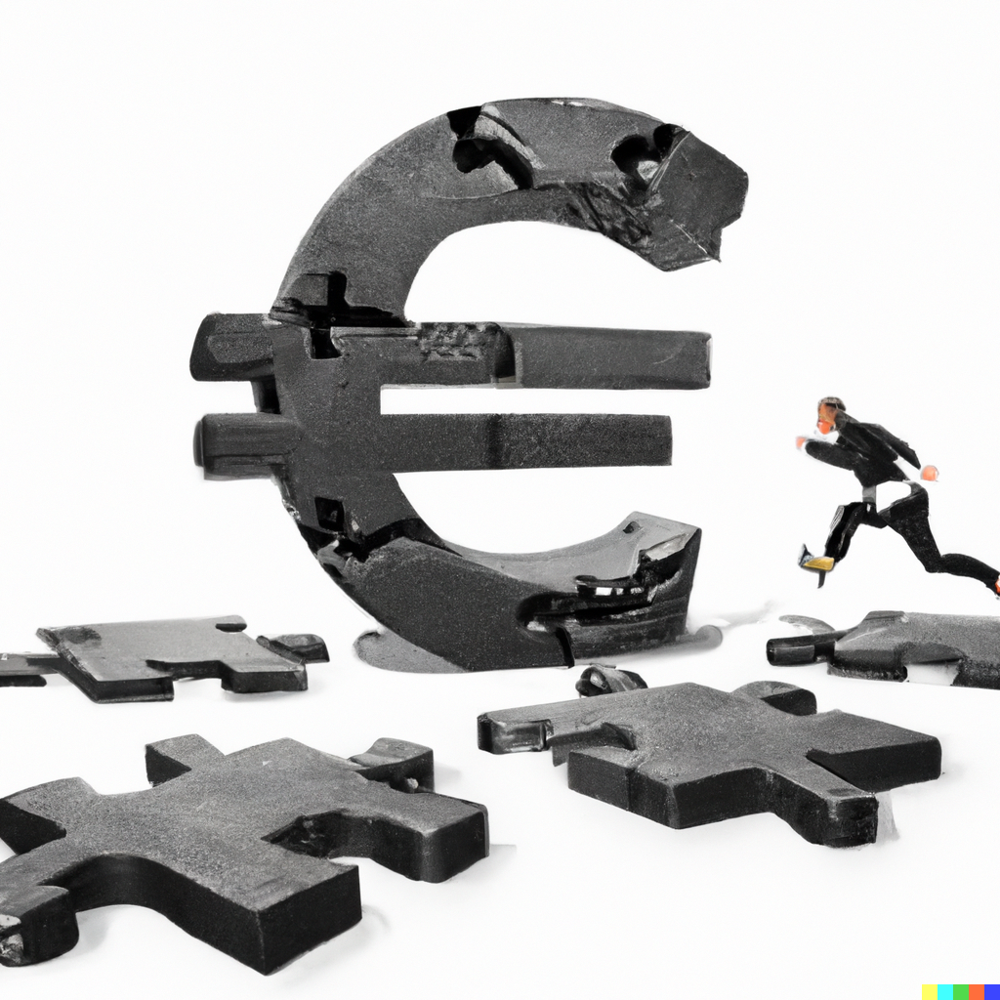
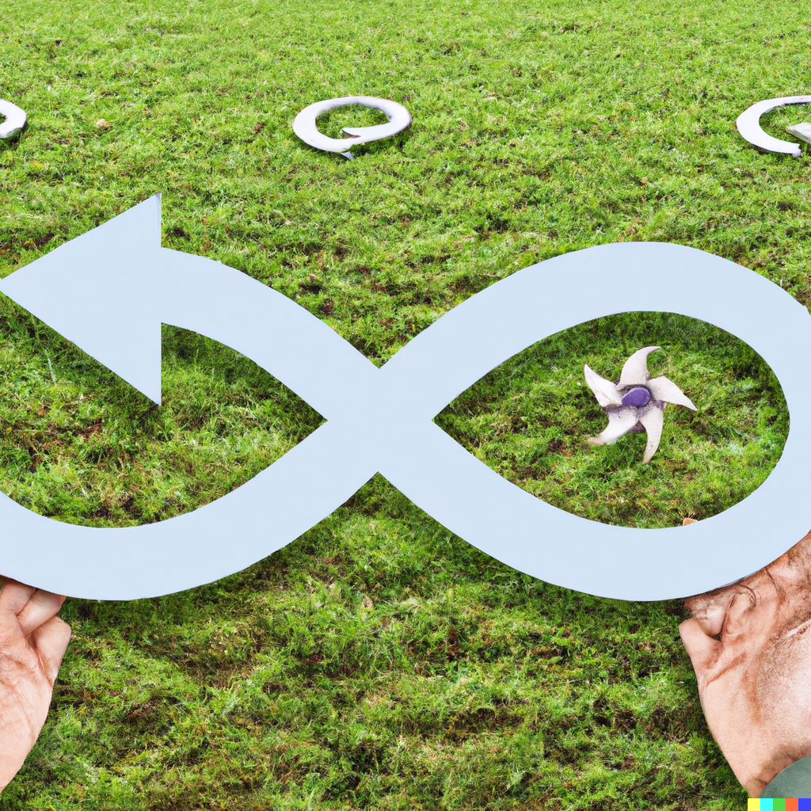
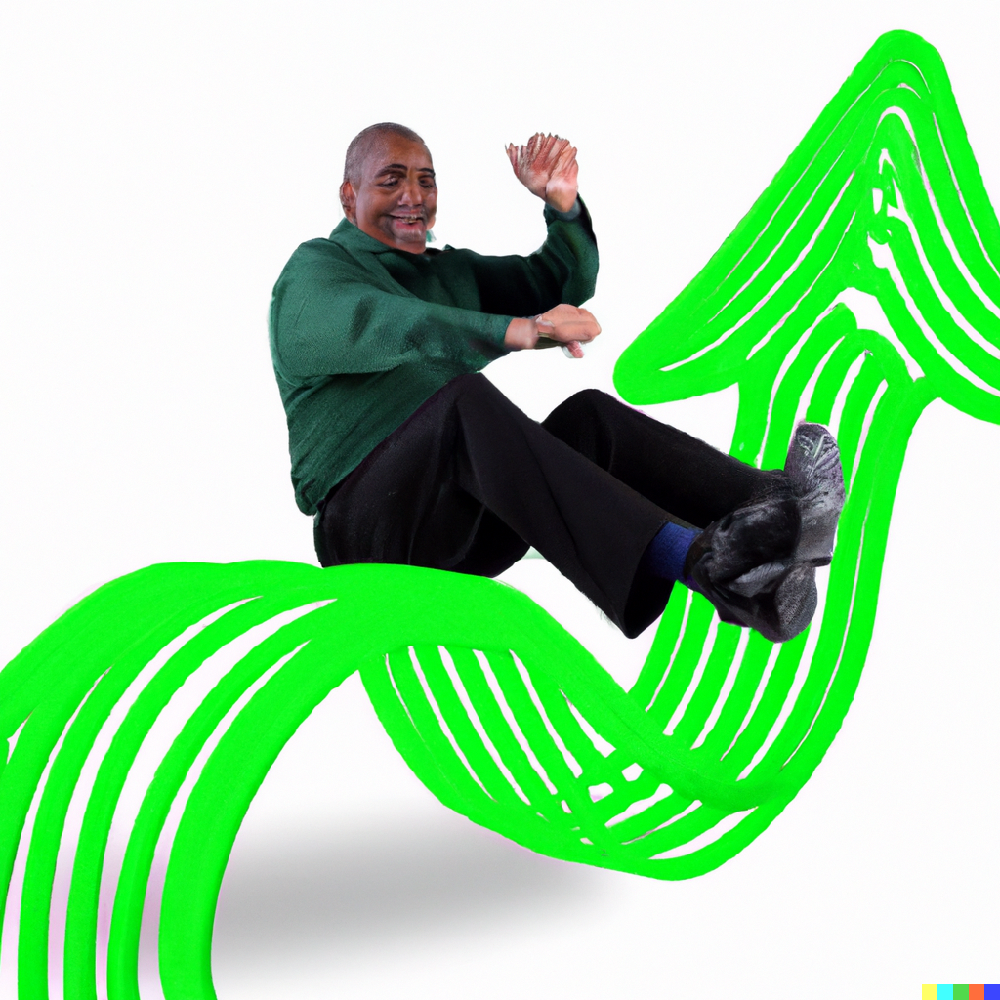
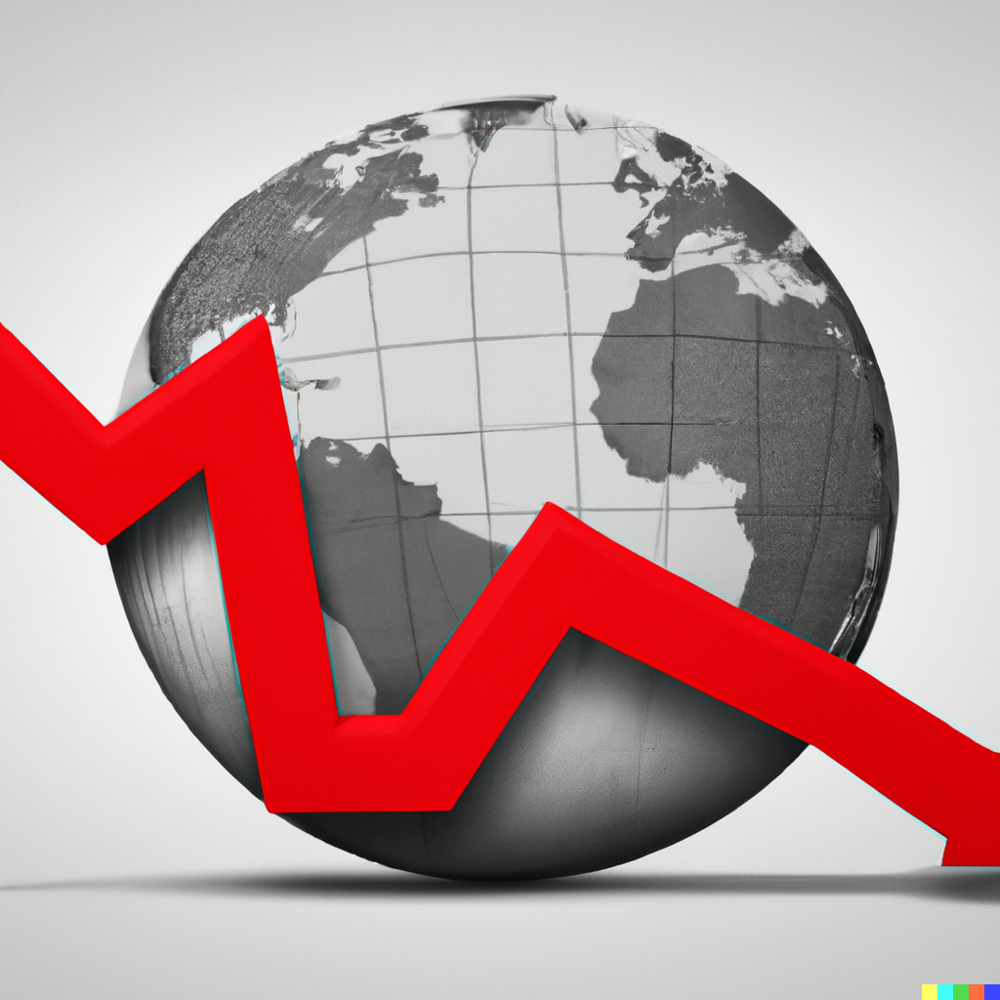
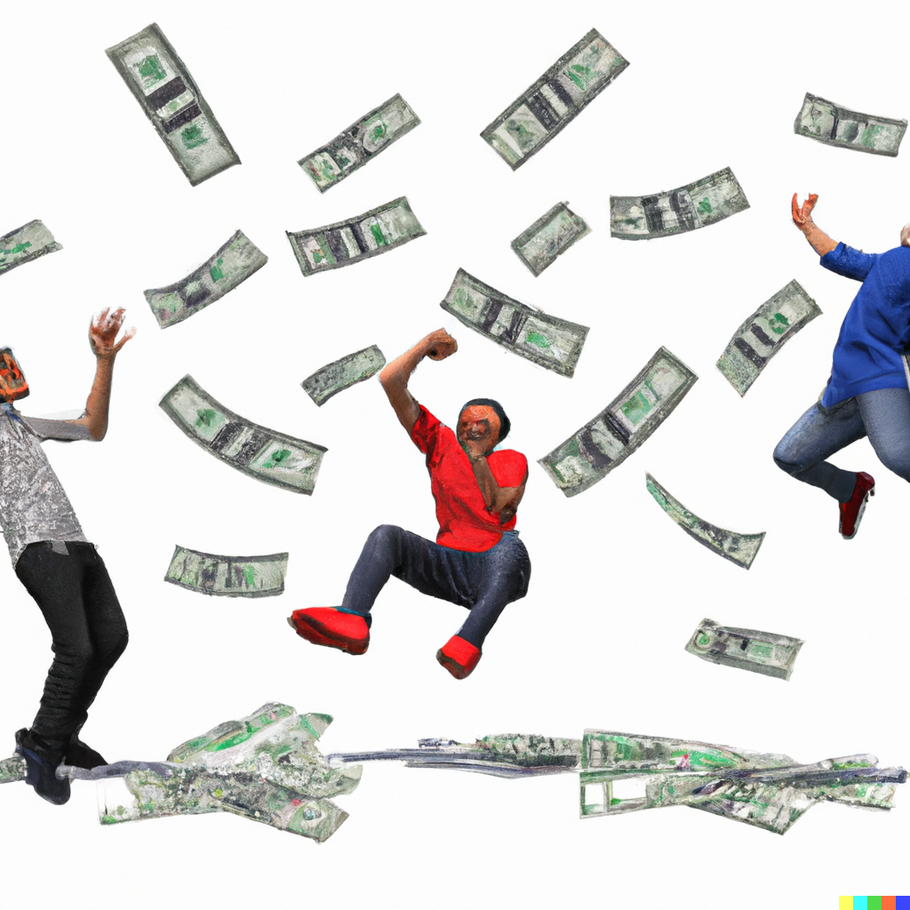
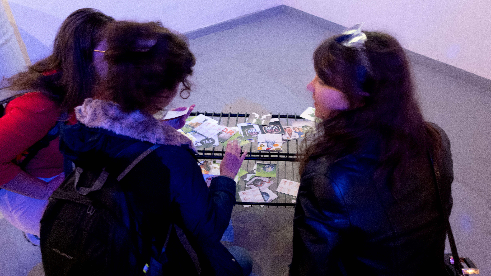
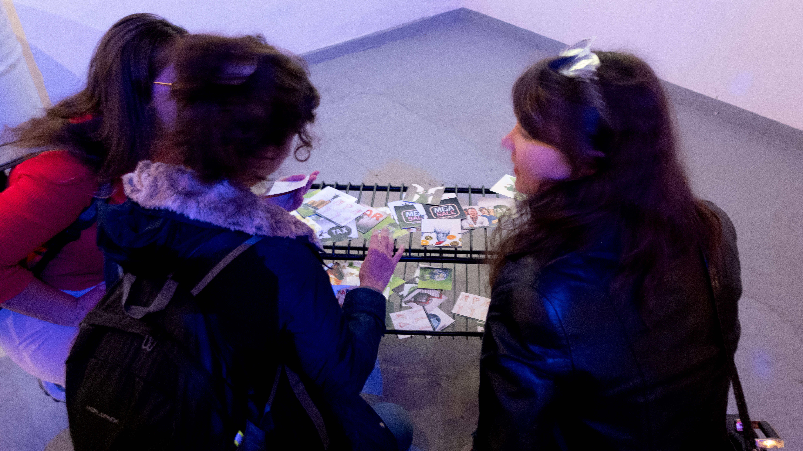

Euro symbol with human legs running on concrete puzzle ground with some pieces falling, isolated on white background


Hand of a businessman in a suit with a watering can watering a plant shaped as a dollar sign. Concept of investment management.


Inflation, tax, cash flow and another financial concept. Financial advisor focused on decreasing value of money. Hand with magnifying glass focused on coins fly away.


Rear view of businessman standing and cheering on top of golden coins stacks, isolated on white background, concept of business financial growth success.


Hand of woman watering small plant in pot shaped like growing graph


Green circular economy concept. Man's hand showing arrow infinity symbol of grass texture with wind turbines and two globes of different colors.


businessmen hold a smartphone showing the world of virtual bitcoin trading on white background. Cryptocurrency and technology financial systems concept.


Black smiling businessman running on green zigzag increasing arrow


Green energy concept with Planet Earth and electric plug on lush grass


Hands holding a green earth with solar batteries


Conceptual image of young businessman in suit standing on high stone column and keeping big white arrow in hand with cloudy skyscape view on background


Gold Bitcoin decreasing value and price fall,BTC coin fire blazing falling to fire zone,Cryptocurrency virtual money concept


businessman holding sledgehammer hitting red FEAR word on concrete wall with large blank hole, overcoming fear concept.


Ecology, Pollution and Environment Concept : Blue earth wear protective or face masks on white background. (Clipping path) (Elements of this image furnished by NASA.)


A businessman in doubt, having to choose between three different choices indicated by arrows pointing in opposite direction concept




Global recession economy and declining World business crisis or international decline and economic fall or falling with a downward trend as a financial concept in a 3D illustration style.




People jumping while money falls from the air against a white background


Group of Multiethnic Diverse Mixed Occupation People
Concept of career development and progress on the social ladder with a man who climbs little by little, a staircase by watering the next step to enable him to reach the leading position.
Young businesswoman climbing a hill while pulling a big stone with a Tax word. Concept of big Tax

Businessman reaching success text made of clouds with career ladder


young man making word IDEA, collage


Set female hands gestures making word LOVE isolated on white background, clipping path


business man investor handshake with global network link connection and graph chart stock market diagram and city background, digital technology, internet communication, teamwork, partnership concept


American Dollars On Background Moving Stock Market Tickers Financial Data


fresh multi fruits splashing into blue clear water splash healthy food diet freshness concept isolated on white background


 
